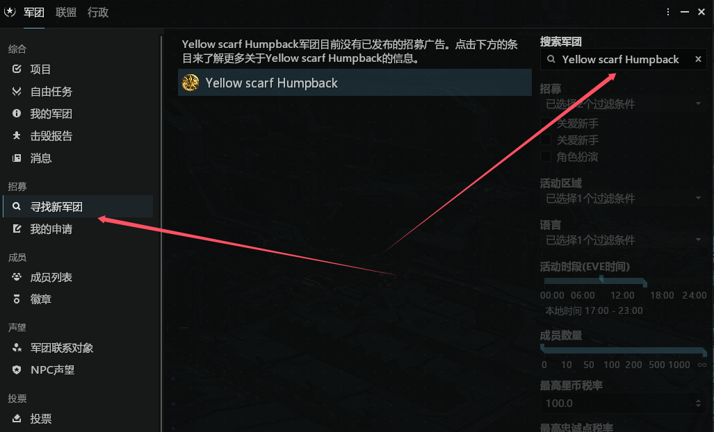
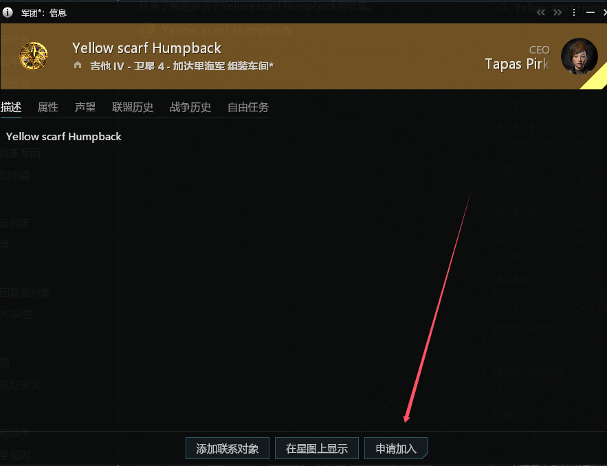

RED新人手册
前言
欢迎来到 RED 军团，新伊甸的星海征途因你而更精彩。这份手册将引领你完成从下载客户端到军团融入的全部流程，愿炮火与荣光与你同行。
游戏下载安装
点击下方按钮，下载官方启动器（推荐纯英文安装路径）：
下载完成后运行安装程序，跟随指引安装即可。
游戏安装
第一步： 双击安装包，选择安装目录 ⚠️ 必须为纯英文路径（例如 D:\EVE\）。

第二步： 启动器右上角「设置」中勾选 “下载完整客户端”，保证全部资源预载。


第三步： 填写注册信息（邮箱、账号、密码）
- 常用电子邮箱
- 游戏账号
- 高强度密码

注意： CCP 会发送验证邮件到注册邮箱，请务必点击邮件中的确认链接完成验证。

创建角色
第一步： 打开游戏启动器并登录，进入游戏界面。

第二步： 点击「创建角色」按钮，开启你的舰长生涯。

第三步： 初始化角色 — 推荐选择 加达里 种族（出生点距离贸易中心最近，新手期极为便利）。

加入军团
第一步： 打开游戏左侧面板。

第二步： 在搜索框输入 “Yellow scarf Humpback”，找到 RED 相关军团，点击查看详情。

第三步： 点击「申请加入」

联系管理员
提交军团申请后，请耐心等待。联系军团管理加速审核，后续将为你分配新手指引教官。
提示：加入军团后即可享受驻地福利、集结补损和新人成长礼包。
联盟Seat绑定
成功加入军团后，为了获取联盟服务和SRP（战损补偿），请按以下步骤绑定 Seat 系统：
第一步： 访问联盟 Seat 门户
登入地址 Seat第二步： 使用你的游戏角色名称登录 Seat 。


第三步： 在 Seat 个人中心绑定你的 QQ 号，便于接收通知及联盟集结。

第四步： 为你的 Seat 账号设置昵称（点击右上角头像 → 个人资料 → 编辑昵称）。


联系我们 & 支援通道
如果在安装、注册或绑定过程中遇到任何问题，请通过以下方式联系军团管理团队：
安全提醒：管理员不会索要账号密码及财产，任何可疑链接切勿点击，保护好你的账户。